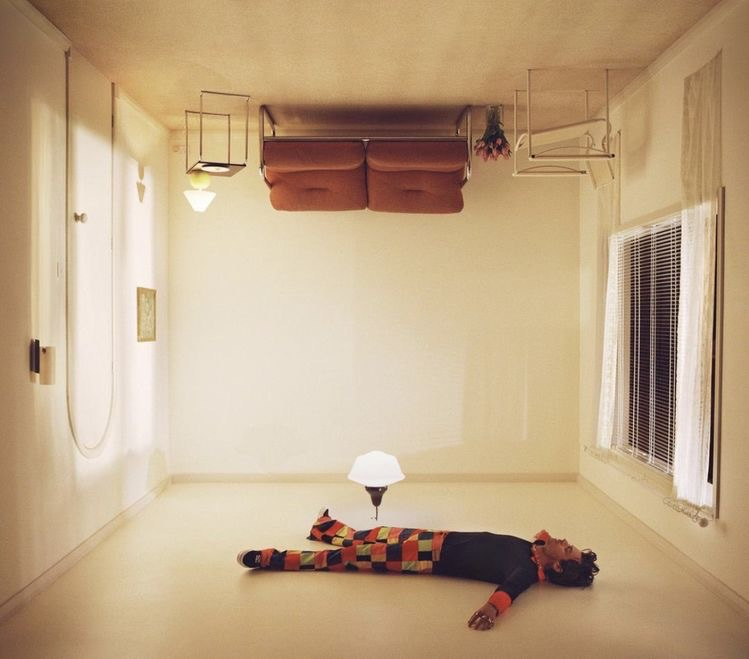

Harry's House
Released May 2022
Musicians:
- Harry Styles, Lead vocals & Keyboards
- Alayna Rodgers & India Boodram, Background vocals
- Mitch Rowland, Bass guitar & Electric guitar,
Harry's House is the third studio album by English singer and songwriter Harry Styles, released on 20 May 2022 by Columbia Records and Erskine. The album was largely written and recorded during 2020 and 2021 and has been noted as Styles' most introspective work. Musically, it is inspired by city pop and features pop-funk, pop rock, synth-pop and R&B styles.


Side One
- Music for a Sushi Resturant
- Late Night Talking
- Grapejuice
- As It Was
- Daylight
- Little Freak
Side Two
- Matilda
- Cinema
- Daydreaming
- Keep Driving
- Satellite
- In 2022, Harry Styles was the winner of The MTV Video Music Award for Album of the Year with Harry's House.
- Musically, Harry's House takes influence from Japan's city pop genre and also features pop-funk, pop rock, synth-pop and R&B. Jon Dolan of Rolling Stone described the album's musical sound as "bright", especially the productions use of synths and horns over synth-pop and R&B songs.
- Tyler Johnson, producer
- Two hours after the album was released on Apple Music, Harry's House earned the most first-day streams for a pop album released in 2022.